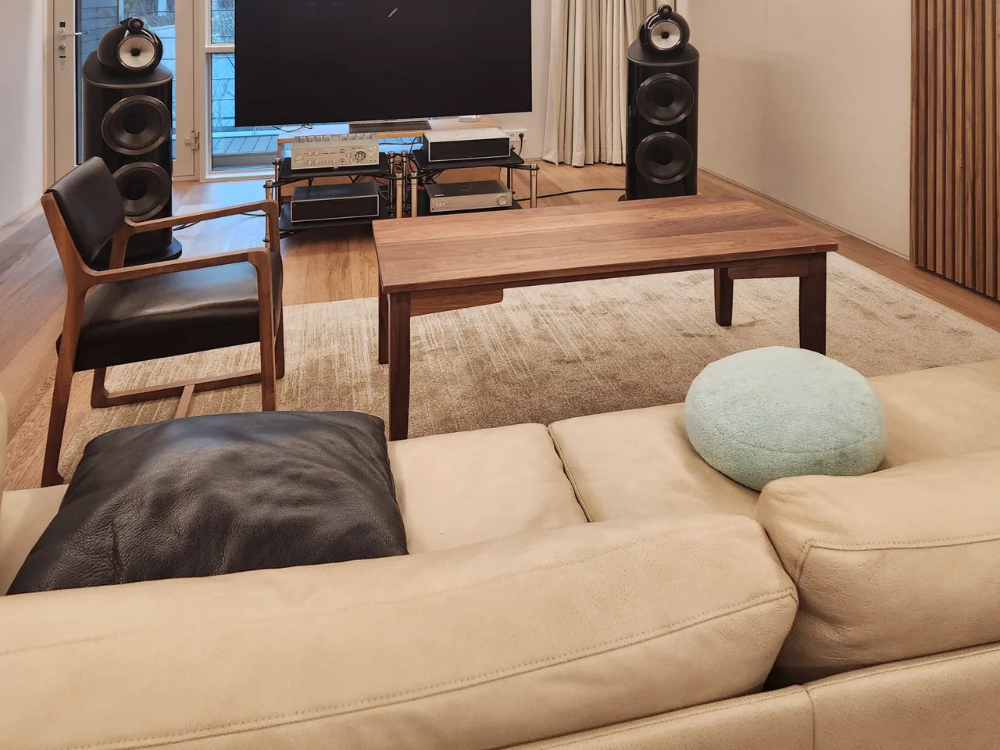
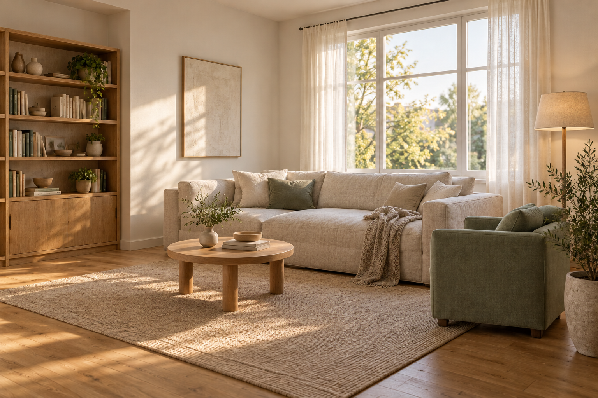

실내건축공사 · 아비드디자인
공간을 이루는
공정과 마감.
벽과 천장, 문과 표면 마감.
실제 내장공사에서 맡은 일과 공간의 기록을 소개합니다.
 실제 현장 · AV룸 내장공사원목마루·창호·조명 자재는 별도 업체 공정
실제 현장 · AV룸 내장공사원목마루·창호·조명 자재는 별도 업체 공정
시공 기록
한 공간에서 이어진
구조와 마감의 기록.
AV룸 내장공사 · 2024–2025
아래 사진은 같은 현장의 서로 다른 공간과 부위입니다.

공간이 쓰이는 모습 · AV룸
가구·오디오·원목마루·창호는 별도 공정입니다. 전실 패브릭 마감 · AV룸
전실 패브릭 마감 · AV룸AV룸 내장공사
바닥·벽·천장의 차음·흡음 구조와 루버·패브릭 내장 마감. 설계·감리, 조명 자재, 원목마루 마감, 창호·냉난방·가구 등은 다른 업체가 맡았습니다.
공정과 상세 기록 보기 →- 기록: 2024년 11–12월, 2025년 1월 일부 추가공정
- 범위: 현장 자료를 바탕으로 정리한 내장공사
- 자료: 실제 공간 사진 · 현장 공정 · 설명 도해
- 실제 현장 기록과 AI 생성 공간 제안을 구분해 살펴보세요.
이 현장에서 맡은 일
벽과 천장부터
문과 화장실까지.
기존 계약·최종 내역에서 확인한 수행 공정입니다. 같은 한 현장의 범위이며 회사의 전체 실적 목록은 아닙니다.
준비와 정리
가설·보양·공사 구간 정리·준공 청소
벽·천장 구조
벽체틀·천장틀과 차음·흡음 구조
표면 마감
패브릭·루버·도배·도장
문과 금속
방음문·문틀·금속 프레임
전기 연결
전기 배관·배선. 조명 자재·제어는 별도 업체 범위
화장실 개조
확대 공사·방수·타일·문 공정
바닥 구조
레벨링과 차음·흡음 바닥 구조. 원목마루 마감은 별도 업체 범위
이 현장의 설계·감리, 원목마루 마감·조명 자재/제어·가구·창호·냉난방·커튼 등은 다른 업체가 맡았습니다. 사진에 함께 보이는 작업을 아비드 단독 실적으로 표시하지 않습니다.
실제 현장 공정 기록 보기 →
03 / 진행 과정
맡길 범위와
완료 기준을 함께 확인합니다.
공간의 목적부터 범위를 정리하고, 무엇이 끝나면 완료인지 함께 이야기합니다.
- 01
공간의 목적과 현장 조건
어떻게 쓰는 공간인지, 지금 어디에서 막히는지부터 살펴봅니다.
- 02
맡는 공정과 별도 공정
수행 범위와 다른 업체가 맡을 연결을 구분해 이야기합니다.
- 03
완료 기준과 실제 기록
무엇이 끝나면 완료인지 정하고, 공정과 마감 기록을 대조합니다.
공간을 이해하는 참고 체험
생활과 빛을 먼저 생각해 봅니다.
AI 생성 거실로 동선과 재료의 느낌을 살펴보는 개념 예시입니다. 실제 시공 사진은 위의 현장 기록에서 확인할 수 있습니다.


AI 생성 공간 제안 이미지01 · LIVING
같은 공간, 서로 다른 하루.
함께 앉는 자리와 혼자 쉬는 자리. 공간을 고르기 전에 어떤 시간을 보내고 싶은지부터 떠올려 봅니다.
공간을 맡기기 전에 생각해 볼 질문
공간을 맡기기 전
예쁜 모습 다음에,
확인하고 싶은 것들.
생활과 동선부터, 견적의 범위와 눈에 보이지 않는 공정, 공사 뒤의 확인까지.
01 / 범위견적에는 어디까지 들어갈까요?
자재와 수량, 맡는 작업과 별도 공정을 나눠 봅니다. 선택을 바꾼 일과 철거 뒤 발견한 조건도 구분해 질문할 수 있습니다.
실제 현장의 수행 범위 보기 →02 / 공정안 보이는 곳은 어떻게 알까요?
완성 사진과 공정 기록, 설명 도해를 함께 봅니다. AV룸 사례에서 확인된 구조와 추정한 부분을 구분했습니다.
실제 공정과 설명 도해 보기 →03 / 이후공사 뒤 문제는 누구에게 물을까요?
맡기기 전에 담당과 접수 방법, 확인과 조치 범위를 질문해 두세요. 담당과 접수 방법, 조치 범위는 상담에서 함께 정합니다.
상담에서 확인할 내용 정리 →